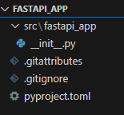
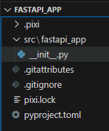

I’ve been using pip and then conda for as long as I can remember. Last year, I did a double-switch. First, I moved to uv and then not long after it I moved to pixi.
I discovered pixi thanks to Eric Ma blog post. At the time, the thing that caught my attention the most is how easy it is to manage the installation of the same environment but one with CUDA support and the other without.
After months of using pixi now, I can say that the 3 things I like the most about pixi are: - The features concept that allows to mix and match packages to create environments - Being able to run tasks - How fast it is!
We’ll take a look at all of this in this blog. The final version of the code generated in this blog is available in this repository.
What is pixi ?
Pixi’s toolset
Now, Pixi is many things but I’ll focus on the things that will be of use to you as a python developer
- Pixi is a package manager that can manage packages from both Conda & PyPI. The dependency resolution tools used by Pixi (
resolvofor conda & uv resolution tool for PyPI packages) are very fast. - Pixi manages environments (similar to
venvforpipusers, a feature that is built intoconda) - Pixi manages
pythonversion as well (similar topyenvif you usepip, built intoconda) - Pixi has a lock file that allows you to reproduce excatly the same environment (similar to what you’d get
conda-lockorpip-lock) - Pixi can be used as a task-runner, just like
makeorjust. - Pixi has built-in cross-platform reproducibility. The lock file includes the exact versions and dependencies in all targeted platforms. You can pick and choose the targeted platform by your project (Linux, Windows, etc).
- Pixi can also install tools like
brewand you can have access to the globally.
Now, while mamba is fast, in my experience, pixi is faster. mamba also lacks lock-files that are essential for reproducibility and a task runner that comes very handy in many situations (CI/CD, Other people running your project, etc.)
Pixi’s project philosophy
While conda is environment-centric, pixi is all about projects. When you init a pixi project, it will create a pixi.toml (or a pyproject.toml instead if you want). In this file, you can specify many environments that can be composed of different features. For example, you can have: - a base feature that includes the basic packages needed by your project - a run feature that consists of packages needed for only running the project - a test feature that consists of additional packages needed for testing the project - a build feature that consists of additional packages or tools needed for building the project.
Imagine having to train a model on a GPU but then when running it, to only have a CPU at your disposal. What you would do is have: - A training environment composed of the features base + build + test that will include the base packages, some CUDA dependencies and pytorch with GPU support coming from the build feature, and test packages like pytest coming from the test feature. - A CI/CD environment composed of base + run + test. The only difference this time is that you’ll be using the run feature that include pytorch-cpu and no CUDA dependencies. - A run environment composed only of base + run features.
The other nice thing is that you can say that you can enforce that some environments (or all of them) use the same versions of the common packages.
Your first project with pixi
Installation
Start first by installing pixi by grabbing the one command-line that corresponds to your case from here: Pixi installation.
It’s really just one command, restart your terminal and there you go.
Getting hands-on
Initiating the project
We’ll work through an example where we’d like to develop a FastAPI app.
Let us initiate a pixi project:
pixi init fastapi_app --format pyproject
cd fastapi_appIf you already have an existing folder, you can simply go inside of it and execute
pixi init --format pyprojectBy default, pixi uses a pixi.toml file for its configuration. As people in python use pyproject.toml, you can specify that you want to use the latter with the --format pyproject.
The initiation of the project creates the following files:

If you look at the content of the pyproject.toml, you’ll see different sections:
[project]
authors = [{name = "Safouane Chergui", email = "chsafouane@gmail.com"}]
name = "fastapi_app"
requires-python = ">= 3.11"
version = "0.1.0"
dependencies = [ "fastapi>=0.115.14,<0.116", "uvicorn[standard]>=0.35.0,<0.36"]
[build-system]
build-backend = "hatchling.build"
requires = ["hatchling"]
[tool.pixi.workspace]
channels = ["conda-forge"]
platforms = ["win-64"]
[tool.pixi.pypi-dependencies]
fastapi_app = { path = ".", editable = true }
[tool.pixi.tasks]Let us dive into the most important fields:
The [project] section includes project metadata. - As we haven’t added a specific python interpreter to the project, the requires-python entry shows the currently active python interpreter in the terminal. You can change it manually if you want.
The [tool.pixi.workspace] section has two entries: - The channels shows the conda channels that can be used to download the conda packages.If you have a company repository (like nexus), it can be used instead or added before conda-forge to be used first. - The platforms corresponds to the platform you’re using. You can add other platforms here and the pixi.lock will include the packages that need to be installed to reproduce the exact environment in the case of the additional platforms.
The [tool.pixi.pypi-dependencies] section is used to specify the packages to install from PyPI. By default, the code you’re developping shows up as an editable package. Your code will be installed in editable mode and you’ll be able to see the changes you make to your code directly reflected in your environment.
The [tool.pixi.tasks] section is empty for the time-being. You can imagine tasks as a replacement of makefiles. We’ll add some tasks later in the blog post.
Adding dependencies
Let us add python 3.12 to the project
pixi add python=3.12As we’re going to create a FastAPI app, let us add fastapi and uvicorn but this time from PyPI.
pixi add --pypi fastapi "uvicorn[standard]"Now that we have proceeded with adding these dependencies, we can see that we have a pixi.lock file that was created.

The pyproject.toml file is now updated to include the new dependencies:
[project]
authors = [{name = "Safouane Chergui", email = "chsafouane@gmail.com"}]
name = "fastapi_app"
requires-python = ">= 3.11"
version = "0.1.0"
dependencies = [ "fastapi>=0.115.14,<0.116", "uvicorn[standard]>=0.35.0,<0.36"]
[build-system]
build-backend = "hatchling.build"
requires = ["hatchling"]
[tool.pixi.workspace]
channels = ["conda-forge"]
platforms = ["win-64"]
[tool.pixi.pypi-dependencies]
fastapi_app = { path = ".", editable = true }
[tool.pixi.tasks]
[tool.pixi.dependencies]
python = "3.12.*"Pinning strategy
The thing that bothered me the most when I started with pixi is that the pinning of the packages. By default, pixi will use a very strict pinning strategy as you can see with fastapi for example: "fastapi>=0.115.14,<0.116", even if the user didn’t specify a version when adding fastapi.
If later you’d like to install a package that is not compatible with the pinned version of fastapi (even though you don’t care about the specific minor version of fastapi shown in the pyproject.toml, or the upper bound constraint), you’ll get an error, and this was frustrating.
pixi developers explain why they chose this strategy and discuss the matter at length in this GitHub issue.
Nonetheless, you can override the pinning strategy by using the pinning-strategy configuration but we’ll look at pixi’s config file later.
Managing environments with features
One of pixi’s amazing features is being able to manage different sets of dependencies for different purposes (like the example for the run, build, test, etc above) using features. A feature (also called a dependency group is just a named set of dependencies).
By default, when adding packages, pixi will automatically add packages to the standard group of dependencies. You can add packages to a specific feature by using the --feature flag.
Let’s say that our core dependencies that are needed for running the app are fastapi and uvicorn. Let us add two families of dependencies (two features): - A test feature that will include pytest & pytest-cov
pixi add --feature test pytest pytest-cov- A
devfeature that will include packages needed for development likeruff
pixi add --feature dev ruffWhen you’ll add this second feature, you’ll get a warning saying that the test feature was added but is not used by any environment and that is ok as we’re going to do it just after.
Now, if you look at the pyproject.toml file, you’ll see that the dependencies are now grouped by features:
[project]
authors = [{name = "Safouane Chergui", email = "chsafouane@gmail.com"}]
name = "fastapi_app"
requires-python = ">= 3.11"
version = "0.1.0"
dependencies = [ "fastapi>=0.115.14,<0.116", "uvicorn[standard]>=0.35.0,<0.36"]
[build-system]
build-backend = "hatchling.build"
requires = ["hatchling"]
[tool.pixi.workspace]
channels = ["conda-forge"]
platforms = ["win-64"]
[tool.pixi.pypi-dependencies]
fastapi_app = { path = ".", editable = true }
[tool.pixi.tasks]
[tool.pixi.dependencies]
python = "3.12.*"
[tool.pixi.feature.test.dependencies]
pytest = "*"
pytest-cov = "*"
[tool.pixi.feature.dev.dependencies]
ruff = "*"Creating environments from dependency groups (features)
In pixi, every environment is a collection of features (can be two features or more). The main project dependencies added without any feature like fastapi and uvicorn are added to an implicit default feature and to a default environment. If you execute
pixi project environment listYou’ll see that the default environment is called default and it includes the default feature.
Environments:
- default:
features: defaultWhen you create a feature like test, pixi will create an environment from the default feature + the test feature, unless you explicitly say that you don’t want to do so. This means, that by default, the test environment isn’t composed of just the dependencies in the test feature but also the dependencies in the default feature: - All dependencies from the default feature (fastapi, uvicorn) - All dependencies from the test feature (pytest, pytest-cov)
Before creating the environments, let us tackle one last thing: the solve-groups.
Imagine having the default environment that includes fastapi and uvicorn and a test environment that includes additionally pytest and pytest-cov. When pixi will resolve the dependencies, the default environment can have different versions of fastapi and uvicorn than the test environment. To force pixi to group both environments together at the solve stage, you need to say that the test environment should be solved together with the default environment by using the --solve-groups flag.
Here’s the documentation definition of the --solve-groups flag:
solve-group: String: The solve group is used to group environments together at the solve stage. This is useful for environments that need to have the same dependencies but might extend them with additional dependencies. For instance when testing a production environment with additional test dependencies.
Let us create the environments now:
Test environment:
We’re saying that we want to create a test_env environment that includes the test feature and that we want to solve it together with the default environment (the one that includes fastapi and uvicorn).
pixi project environment add fastapi-test-env --feature test --solve-group defaultDev environment:
We’re saying that we want to create a test_env environment that includes the test feature and that we want to solve it together with the default environment (the one that includes fastapi and uvicorn).
pixi project environment add fastapi-dev-env --feature test --feature dev --solve-group defaultNow, if you list the environments, you’ll see that the test_env and dev_env are created and that they include the features we specified:
pixi project environment list
Environments:
- default:
features: default
- fastapi-test-env:
features: test, default
solve_group: default
- fastapi-dev-env:
features: test, dev, default
solve_group: defaultIf you look at the pyproject.toml file, you’ll see that you have a new section called [tool.pixi.environments] that includes the environments you created:
[tool.pixi.environments]
fastapi-test-env = { features = ["test"], solve-group = "default" }
fastapi-dev-env = { features = ["test", "dev"], solve-group = "default" }All of this can be added manually instead to the pyproject.toml but it’s error prone and the pixi CLI is honestly very handy.
Environments installation
Now, let us create the environments by first install the default environment
pixi installYou can also simply run pixi shell to install the default environment and open a shell in it.
To install the dev environment, you can run:
pixi install fastapi-dev-envYou can also install all the environments at once using the flag --all to install:
pixi install --allNow you can any one of the environment inside the shell by running for example:
pixi shell fastapi-dev-envWe’ll see how you can use them in vscode later.
Tasks
pixi can be used as a task runner and thus would replace make or just. You can define tasks in the pyproject.toml file under the [tool.pixi.tasks] section.
You can use the CLI to add the tasks but sometimes I find it easier to write the tasks manually in pyproject.toml specially if they are multiline tasks.
In the repo provided with this tutorial, you’ll find the files needed (src/main.py) to execute the tasks along with the tutorial.
Creating tasks
To create a task, you can use the pixi task add command and you’ll have to specify two things:
- The task name
- The command to run
Execute pixi task add --help to see the available options, as you can add for example environment variables or isolate the task from the shell when running (not having access to the shell variables for example) among other things.
Let us create a task to start a uvicorn server with hot reloading. The task will have as a name start. The command will add the task to the pyproject.toml file under the [tool.pixi.tasks] section.
pixi task add start "uvicorn my_app.main:app --reload --host 0.0.0.0"Let us also add a linting task that uses ruff
pixi task add lint "ruff check src --fix"If you look now at the pyproject.toml file, you’ll see that the tasks are added under the [tool.pixi.tasks] section:
[tool.pixi.tasks]
start = "uvicorn my_app.main:app --reload --host 0.0.0.0"
lint = { task = "ruff check src --fix", environment = "fastapi-dev-env" }Running tasks
To run the linting task in the dev environment, you can run:
pixi run -e fastapi-dev-env lintYou’ll get the following output:
Pixi task (lint in fastapi-dev-env): ruff check src --fix
All checks passed!Now, you can specify in the pyproject.toml the default environment in which the task should run but I haven’t found a way to do it through the CLI yet.
[tool.pixi.tasks]
start = "uvicorn my_app.main:app --reload --host 0.0.0.0"
lint = { task = "ruff check src --fix", environment = "fastapi-dev-env" }As I can’t go through everything you can do with tasks, I’ll just list the things that I find useful but you can find more in the pixi documentation: - You can create a task that is composed of many tasks using the dependes-on field. that for example executes the linting task and then runs the app - You can create a tasks that runs the same task in multiple environments. If for example you’d like to test your code against multiple python versions, you can create a task that runs the same task in environments with different python versions (instead of using matrices of environments in CI/CD). Here an example from pixi’s documentation:
# Task that depends on other tasks in different environments
[tasks.test-all]
depends-on = [
{ task = "test", environment = "py311" },
{ task = "test", environment = "py312" },
]- You can add environment variables or isolate the task when running from the shell (and thus not having access to the shell variables).
- If a task depends on another task, you can cache the result of the first task and use it in the second task. Pixi won’t rerun the first task after doing some verifications that can be found in the documentation.
Pixi’s configuration
Why another config file ?
The pyproject.toml (or the pixi.toml) file reprensents the configuration of the pixi project. It includes the project metadata, the dependencies, the environments, the tasks, etc.
There is additional configuration that is not required for the project per say but in a way changes the behavior you would place in a config.toml file.
You can set this config at one of three levels: - locally: in this case, the configuration will be stored your_project/.pixi/config.toml and will impact only the current project. - globally: in this case, the configuration will be stored in $PIXI_HOME/config.toml and will impact all the projects using pixi. - system-wide: in this case, the configuration will be stored in /etc/pixi/config.toml and will impact all the projects using pixi.
You can also use the pixi config set <some_config_key> <some_config_value> command to set the configuration. While I will show you right away the keys that I find useful, you can find the full list of configuration keys as of version 0.49 that you can set:
│ Supported keys:
│ default-channels,
│ authentication-override-file,
│ tls-no-verify,
│ mirrors,
│ detached-environments,
│ pinning-strategy,
│ max-concurrent-solves,
│ repodata-config,
│ repodata-config.disable-jlap,
│ repodata-config.disable-bzip2,
│ repodata-config.disable-zstd,
│ repodata-config.disable-sharded,
│ pypi-config,
│ pypi-config.index-url,
│ pypi-config.extra-index-urls,
│ pypi-config.keyring-provider,
│ shell,
│ shell.force-activate,
│ shell.source-completion-scripts,
│ shell.change-ps1,
│ s3-options,
│ s3-options.<bucket>,
│ s3-options.<bucket>.endpoint-url,
│ s3-options.<bucket>.region,
│ s3-options.<bucket>.force-path-style,
│ experimental.use-environment-activation-cache,
│ proxy-config,
│ proxy-config.https,
│ proxy-config.http,
│ proxy-config.non-proxy-hostsUseful keys
Using private conda & PyPI repositories
Some of my very security-oriented customers usually have their own conda and pip repositories (like nexus) and oblige everyone to use them as they only include packages that are approved by the security team.
For this, I use pypi-config.index-url and pypi-config.extra-index-urls to specify the index URL and the extra index URLs to use for PyPI packages.
pixi config set pypi-config.index-url https://nexus.some_random_company.com/pypi/simpleLooking at the documentation, these can also be added to the pyproject.toml file under the [tool.pixi.pypi-options] section but I’ve never added them here.
[tool.pixi.pypi-options]
# Public packages will be sourced from the official PyPI
index-url = "https://nexus.some_random_company.com/pypi/simple"
# Internal packages will be searched for here first
extra-index-urls = ["https://nexus.some_additional_random_company.com/pypi/simple"]For conda, I add the channels to the channels entry under the [tool.pixi.workspace] section in the pyproject.toml file:
[tool.pixi.workspace]
channels = [
"https://nexus.some_random_company.com/conda-forge",
"https://nexus.some_random_company_second.com/conda-forge"
]
platforms = ["win-64"]If you need to manage credentials for private repositories, you can check pixi auth login.
Pinning strategy
The other key that I find useful is the pinning-strategy key. As I said before, by default, pixi uses a very strict pinning strategy that can be annoying at times. You can change it to one of the strategies listed in the documentation.
Personally, I like to pin to the major version using:
pixi config set pinning-strategy majorThis might not be a very good practice as you can see here but it works just fine for my needs.
Conclusion
Well, that was quire a ride. I hope you enjoyed it and that you learned something new.
My advice to you is to start using pixi in your personal projects. At first, there is going to be a slight learning curve but once you get used to it, you’ll find it extremely fast and convenient to use.
If you have any questions, feel free to reach out to me on my linkedin.